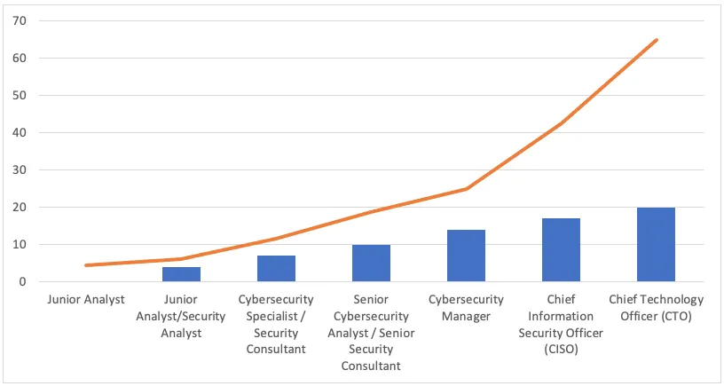

A Brief About Industry 4.0
Industry 4.0, also known as the Fourth Industrial Revolution, refers to the ongoing transformation of
traditional industries through the integration of advanced technologies and digital systems. It
represents a
paradigm shift in the way goods are manufactured, delivered, and consumed.
Industry 4.0 encompasses various emerging technologies, including the Internet of Things (IoT),
Artificial
Intelligence (AI), Big Data Analytics, Cloud Computing, Robotics, And Advanced Automation. These
technologies
are interconnected and work together to create a highly digitized and interconnected ecosystem.
The key concept behind Industry 4.0 is the fusion of the physical and digital worlds. Through the use of
sensors, devices, and intelligent systems, physical objects and production processes can be digitized
and
monitored in real time. This enables the collection of vast amounts of data, which can be analysed to
gain
insights, optimize operations, and make informed decisions.
In an Industry 4.0 environment, machines and systems can communicate with each other and make
decentralized
decisions without human intervention. This concept is known as cyber-physical systems, where physical
devices
are equipped with sensors and actuators, enabling them to interact with their environment and with each
other.
The implications of Industry 4.0 are far-reaching. It has the potential to revolutionize manufacturing
and
industrial processes, leading to increased productivity, efficiency, and flexibility. It can enable the
creation
of smart factories that are highly automated and adaptable to changing demands. Additionally, Industry
4.0
can
empower new business models, such as mass customization and personalized production, by leveraging the
capabilities of digital technologies.
However, the adoption of Industry 4.0 also brings challenges, including Data Analytics and Cybersecurity
concerns, the need for reskilling and upskilling the workforce and addressing the ethical implications
of
automation and AI. Nonetheless, Industry 4.0 represents a significant shift in the industrial landscape,
offering vast opportunities for innovation, economic growth, and sustainable development.
Introduction
Hook: The Increasing Importance Of Cybersecurity In Today's Digital World:
In today's interconnected and digitized world, cybersecurity has emerged as a paramount concern. The
rapid advancement of technology and the widespread use of the internet have opened up new avenues for
both innovation and exploitation. Everyone from large corporations to individual users is vulnerable to
cyber threats that can compromise sensitive data, disrupt services, and even threaten national security.
The escalating frequency and sophistication of cyber-attacks have underscored the need for robust
cybersecurity measures. As a result, the importance of cybersecurity has never been more evident or
critical.
Cybersecurity encompasses a range of practices, technologies, and processes designed to protect digital
systems, networks, and data from unauthorized access, malicious activities, and other potential risks.
It involves a proactive approach to identify vulnerabilities, mitigate threats, and respond effectively
to incidents. The demand for skilled cybersecurity professionals has skyrocketed with the increasing
reliance on digital infrastructure and the proliferation of sensitive information online.
In this blog post, we will delve into the career opportunities within the field of cybersecurity and
shed light on why it has become such a lucrative and fulfilling path for aspiring professionals. We will
explore the different roles, the financial rewards, and the personal satisfaction that can be derived
from a career in cybersecurity. So, if you are intrigued by the world of cybersecurity and the prospect
of safeguarding the digital realm, read on to discover how you can unleash the power of cybersecurity as
a rewarding career path.
A Brief Overview Of The Blog's Purpose: To Explore The Career Opportunities In
Cybersecurity And Highlight Its Lucrative And Fulfilling Aspects:
The world of cybersecurity offers a plethora of exciting career opportunities for individuals with a
passion for technology, problem-solving, and protecting valuable digital assets. In this section, we
will provide a concise overview of the blog's purpose, which is to explore the various career paths
available within cybersecurity and shed light on the lucrative and fulfilling aspects of this field.
- Exploring career opportunities: The field of cybersecurity encompasses a wide range
of roles and specializations, each requiring unique skills and expertise. We will delve into some of
the most in-demand positions, such as cybersecurity analysts, ethical hackers, security architects,
incident responders, security consultants, and Chief Information Security Officers (CISOs). By
understanding these roles, readers can gain insights into the diverse opportunities that exist
within the cybersecurity industry.
- Highlighting the financial rewards: A key aspect of a fulfilling career is the
financial stability and growth it can offer. The demand for cybersecurity professionals has
skyrocketed in recent years, leading to attractive salary ranges across different roles. We will
discuss the earning potential and the factors that contribute to the lucrative nature of a
cybersecurity career, allowing readers to understand the financial benefits that await them in this
field.
- Emphasizing personal satisfaction: Beyond financial rewards, a fulfilling career in
cybersecurity goes hand in hand with a sense of purpose and contribution to the greater good. We
will explore the intrinsic rewards of working in a field that focuses on protecting individuals,
organizations, and society as a whole from cyber threats. Additionally, the dynamic and
ever-evolving nature of cybersecurity provides constant challenges and opportunities for personal
growth, making it an intellectually stimulating and fulfilling career path.
By delving into the career opportunities, financial rewards, and personal satisfaction that come with a
cybersecurity career, this blog aims to inspire readers to consider this field as a viable and
fulfilling option. Whether you are a recent graduate exploring career paths or a professional
considering a career transition, understanding the potential of cybersecurity can open doors to a world
of possibilities. So, let's dive into the exciting realm of cybersecurity and discover how it can
unleash your potential for a lucrative and fulfilling career.
Understanding Cybersecurity
In today's interconnected and technology-driven world, the term "Cybersecurity" has become a buzzword. But what exactly does it entail, and why is it crucial for safeguarding our digital assets? In this section, we will explore the definition of cybersecurity and delve into its significance in protecting our digital lives.
Cybersecurity refers to the practice of protecting computer systems, networks, and data from unauthorized access, exploitation, and damage. It encompasses a range of strategies, technologies, and processes that aim to mitigate the risks posed by cyber threats, including hackers, malware, ransomware, phishing attacks, and other malicious activities.
The significance of cybersecurity cannot be overstated. As our reliance on digital technologies grows, so does the potential for cybercriminals to exploit vulnerabilities and wreak havoc on individuals, organizations, and even nations. A successful cyber-attack can have far-reaching consequences, leading to financial losses, reputational damage, privacy breaches, and disruption of critical services. It is not just about financial transactions or personal information anymore; cybersecurity is vital for protecting our infrastructure, intellectual property, healthcare systems, and even democratic processes.
The rapid digitisation of industries, the rise of the Internet of Things (IoT), and the increasing connectivity of devices have expanded the attack surface for cyber threats. This makes it imperative for individuals and organisations alike to prioritise cybersecurity as a fundamental aspect of their operations. By implementing robust security measures, such as firewalls, encryption protocols, access controls, and security awareness training, we can fortify our digital defences and mitigate the risks posed by cybercriminals.
Moreover, cybersecurity is not limited to reactive measures. It also encompasses proactive strategies, such as vulnerability assessments, penetration testing, and threat intelligence, to identify weaknesses and anticipate potential threats. By staying one step ahead of cybercriminals, cybersecurity professionals play a critical role in safeguarding our digital assets and maintaining information integrity, confidentiality, and availability.
In summary, cybersecurity is the foundation of our digital resilience. It acts as a shield against cyber threats, safeguarding our personal information, financial transactions, intellectual property, and critical infrastructure. By understanding its definition and significance, we can appreciate the vital role that cybersecurity professionals play in protecting our digital lives.
Brief Discussion On The Growing Cybersecurity Threats And Challenges
As technology advances and our digital dependency deepens, the cybersecurity landscape faces an
ever-growing number of threats and challenges. In this section, we will delve into a brief
discussion on the escalating cybersecurity threats and the challenges they pose to individuals,
organisations, and society as a whole.
- Evolving Cyber Threat Landscape:
The landscape of cyber threats is in a perpetual state of evolution, with the emergence of new and
increasingly sophisticated threats on a regular basis. Cybercriminals are becoming more organised,
technologically adept, and creative in their methods. From malware and ransomware attacks to social
engineering and insider threats, the range and complexity of cyber threats continue to expand,
posing significant challenges for cybersecurity professionals.
- Sophisticated and Persistent Attacks:
Cyberattacks are becoming increasingly sophisticated, leveraging advanced techniques and
technologies to breach security defences. Attackers employ techniques such as zero-day exploits,
advanced persistent threats (APTs), and polymorphic malware to bypass traditional security measures.
These sophisticated attacks require constant vigilance, advanced detection mechanisms, and rapid
response to mitigate their impact.
- Targeting Critical Infrastructure:
Critical infrastructure, including power grids, transportation systems, and healthcare facilities,
is a prime target for cybercriminals. Disrupting or compromising these systems can have severe
consequences, potentially endangering public safety and causing widespread disruption. Protecting
critical infrastructure against cyber threats requires robust security measures, collaboration
between government and private sector entities, and ongoing risk assessments.
- Insider Threats:
Insider threats, both intentional and unintentional, present a significant challenge for
organisations. Malicious insiders with privileged access can cause substantial damage by stealing
sensitive data, introducing malware, or disrupting operations. Unintentional insider threats, such
as employees falling victim to phishing attacks or accidentally leaking sensitive information, can
also lead to security breaches. Organisations must implement strict access controls, conduct
thorough background checks, and provide cybersecurity awareness training to mitigate insider
threats.
- Cloud Security:
The widespread adoption of cloud computing introduces new challenges to cybersecurity. Organisations
are grappling with securing their data and applications in cloud environments and ensuring the
integrity and confidentiality of data stored in third-party cloud service providers. Cloud security
requires a shared responsibility model, where both organisations and cloud providers work together
to establish robust security measures and protect against emerging threats.
- Internet of Things (IoT) Vulnerabilities:
The proliferation of Internet of Things (IoT) devices presents a growing challenge for
cybersecurity. IoT devices, ranging from smart home devices to industrial control systems, often
lack adequate security controls, making them attractive targets for cybercriminals. Compromised IoT
devices can be leveraged to launch large-scale distributed denial-of-service (DDoS) attacks or gain
unauthorised access to networks. Addressing IoT vulnerabilities requires a holistic approach,
including secure device design, regular patching, and network segmentation.
- Data Breaches and Privacy Concerns:
Data breaches continue to make headlines, exposing sensitive information and undermining user trust.
Cybercriminals target organisations to gain access to personal, financial, and intellectual property
data. Data privacy regulations, such as the General Data Protection Regulation (GDPR) and California
Consumer Privacy Act (CCPA), have heightened the importance of protecting personal information.
Organisations face the challenge of implementing robust data protection measures, ensuring
compliance with regulations, and addressing privacy concerns.
- Skills Shortage and Workforce Development:
The demand for skilled cybersecurity professionals outpaces the available talent pool, creating a
skills shortage in the industry. Organisations struggle to find qualified individuals with the
necessary expertise to defend against emerging threats. To address this challenge, it is crucial to
invest in cybersecurity education, training programs, and workforce development initiatives.
Building a diverse and skilled cybersecurity workforce is essential to effectively tackle the
growing threats.
In conclusion, the cybersecurity landscape is rife with growing threats and complex challenges.
Cybercriminals continuously adapt their tactics, targeting critical infrastructure, exploiting
vulnerabilities in emerging technologies, and compromising data privacy. Tackling these challenges
requires a comprehensive approach, including advanced security technologies, effective risk
management strategies, collaboration between stakeholders, and a skilled cybersecurity workforce. By
staying informed, investing in security measures, and fostering a culture of cybersecurity,
individuals and organisations can better protect themselves against evolving cybersecurity threats.
Exploring Career Opportunities in Cybersecurity
- Security Analyst
- Roles and Responsibility of a Security Analyst
- Conduct security assessments and vulnerability scans to identify potential risks and weaknesses in
systems and networks.
- Monitor security events and alerts, investigate incidents, and provide incident response support.
- Develop and maintain security policies, procedures, and guidelines.
- Implement and manage security technologies such as firewalls, antivirus
software, and intrusion detection systems.
- Penetration Tester
- Roles and Responsibility of a Penetration Tester
- Conduct authorized simulated cyber-attacks to identify vulnerabilities and weaknesses in systems and
networks.
- Perform network and application penetration testing, analysing the results to provide
recommendations for remediation.
- Create detailed reports outlining vulnerabilities and recommended countermeasures.
- Stay updated on the latest hacking techniques, tools, and industry
best practices.
- Security Engineer
- Roles and Responsibility of a Security Engineer
- Design, implement, and manage security systems and solutions, including firewalls, encryption, and authentication mechanisms.
- Conduct risk assessments and develop security architectures and strategies.
- Collaborate with cross-functional teams to ensure secure development practices and compliance with security standards.
- Participate in incident response activities and support investigations of security incidents.
- Cybersecurity Consultant
- Roles and Responsibility of a Cybersecurity Consultant
- Provide expert guidance and advice to clients on cybersecurity strategies, risk management, and compliance.
- Conduct security assessments, audits, and vulnerability assessments to identify gaps and recommend solutions.
- Develop security policies, procedures, and incident response plans tailored to client needs.
- Deliver training and awareness programs to educate clients on security best practices.
- Security Operations Centre (SOC) Analyst
- Roles and Responsibility of a Security Operations Centre (SOC) Analyst
- Monitor and analyse security events and alerts using security information and event management (SIEM) tools.
- Investigate and respond to security incidents, triaging and escalating as necessary.
- Develop and refine incident response procedures and playbooks.
- Conduct threat hunting and perform proactive security monitoring.
- Chief Information Security Officer (CISO)
- Roles and Responsibility of a Chief Information Security Officer (CISO)
- Provide strategic leadership for the organization's information security program.
- Develop and implement security policies, standards, and frameworks.
- Manage risk assessments, compliance, and incident response.
- Engage with executive management and the board to communicate security risks and initiatives.
It's important to note that these job descriptions and responsibilities can vary depending on the organization, industry, and level of seniority. The field of cybersecurity offers a wide range of roles, each with its own specific focus and skill set. By understanding the diverse opportunities available, aspiring cybersecurity professionals can better navigate their career paths and identify the areas that align with their interests and strengths.
The Lucrative Side of a Cybersecurity Career
Average Salary Ranges for Different Cybersecurity Roles in India
Here is a graphical representation of the Lucarative Side of a Cybersecurity Career

When considering a career in cybersecurity, understanding the salary ranges associated with different roles can provide valuable insights into earning potential and career progression. In this section, we will explore the average salary ranges for various cybersecurity roles in India.
- Entry-Level Positions
- Security Analyst: Entry-level security analysts in India can expect an average salary range of ₹400,000 to ₹800,000 per year. This role often involves monitoring security events, conducting vulnerability assessments, and providing incident response support.
- Junior Penetration Tester: Junior penetration testers, responsible for identifying vulnerabilities through simulated attacks, can earn an average salary ranging from ₹500,000 to ₹900,000 per year.
- Mid-Level Positions
- Security Engineer: Mid-level security engineers, involved in designing and implementing security systems, can earn an average salary range of ₹800,000 to ₹1,500,000 per year. These professionals are responsible for managing security solutions, conducting risk assessments, and participating in incident response activities.
- Cybersecurity Consultant: Cybersecurity consultants, providing expert guidance and advice to clients, can expect an average salary range of ₹1,000,000 to ₹2,000,000 per year. This role involves conducting security assessments, developing policies and procedures, and delivering training programs.
- Senior-Level Positions
- Security Operations Center (SOC) Manager: Senior-level SOC managers, overseeing security monitoring and incident response activities, can earn an average salary ranging from ₹1,500,000 to ₹3,000,000 per year. They are responsible for managing SOC teams, refining incident response procedures, and ensuring effective threat detection and response.
- Chief Information Security Officer (CISO): CISOs, holding senior executive positions responsible for the organization's overall security program, can expect an average salary range of ₹2,500,000 to ₹5,000,000 per year. CISOs provide strategic leadership, develop security policies, manage risk assessments, and communicate security risks to executive management and the board.
It's important to note that these salary ranges are approximate and can vary based on factors such as industry, location, organization size, and individual skills and experience. Additionally, the salary ranges mentioned here represent general trends and may differ for specific companies or regions within India.
Cybersecurity professionals in India often have opportunities for career advancement and salary growth as they gain experience and expertise. Continuous learning, acquiring relevant certifications, and staying updated with the latest industry trends can contribute to professional development and potentially higher salary prospects.
While salary is an important consideration, it's also crucial to assess other factors such as job satisfaction, work-life balance, and growth opportunities within an organization. Ultimately, finding the right fit between personal aspirations, skill set, and organizational culture is key to building a successful and rewarding career in cybersecurity.
Discussion on the Potential for Career Growth and Advancement
A career in cybersecurity offers immense potential for growth and advancement, driven by the increasing demand
for skilled professionals and the evolving nature of the field. In this section, we will explore the various
factors that contribute to career growth in cybersecurity and discuss the opportunities available for
professionals in the industry.
Let's first look at the tentative time frame in the growth ladder for Cybersecurity Professionals.
| Position |
No. Of Years |
Entry Level:
At this stage, individuals usually start their careers as cybersecurity technicians, analysts, or junior members of a cybersecurity team. They may have recently graduated or completed relevant certifications. |
0-2 years |
Junior Cybersecurity Analyst:
After gaining some experience and skills, individuals can move into junior cybersecurity analyst roles. Here, they will handle basic security tasks and incident response under the guidance of senior team members. |
2-4 years |
Mid-level Positions:
Mid-level positions often require several years of experience. During this stage, professionals become cybersecurity specialists, handling more complex tasks and contributing to projects and security operations. They may also take on leadership roles for specific projects. |
4-7 years |
Senior Cybersecurity Analyst:
With around a decade of experience, individuals can become senior cybersecurity analysts. They take on more responsibility, lead security initiatives, and mentor junior team members. |
7-10 years |
Leadership Roles:
Moving into leadership roles usually requires significant experience in the field. Professionals who have demonstrated strong leadership and strategic skills may transition into managerial positions, overseeing cybersecurity teams and coordinating efforts. |
10+ years |
Cybersecurity Manager:
As a cybersecurity manager, individuals typically have 12 or more years of experience. They are responsible for managing a cybersecurity team, developing security strategies, and communicating with stakeholders. |
12+ years |
Chief Information Security Officer (CISO):
To become a CISO, individuals generally need at least 15 years of experience in the field, with a significant portion in leadership roles. The CISO is responsible for the overall cybersecurity strategy and implementation within an organization. |
15+ years |
Chief Technology Officer (CTO):
Some CISOs may eventually transition into the role of Chief Technology Officer (CTO), especially if they have a broader range of technical expertise. CTOs oversee the entire technology infrastructure, including cybersecurity, and generally have 20 or more years of experience. |
20+ Years |
It's important to note that the time frames mentioned above are approximate and can vary depending on individual progression, industry demand, and other factors. Continuous learning, pursuing advanced certifications, and staying updated with the latest cybersecurity trends can help accelerate career growth in this dynamic field.
- Rapidly Expanding Field
The field of cybersecurity is continuously expanding as organizations across industries recognize the
critical importance of protecting their digital assets. This expansion creates a plethora of opportunities
for professionals to enter the field and grow their careers. With the rapid advancement of technology and
the emergence of new threats, cybersecurity professionals are in high demand, providing them with numerous
avenues for career progression.
- Diverse Range of Specializations
Cybersecurity encompasses a wide range of specializations, allowing professionals to focus on specific areas
of interest and expertise. These specializations include but are not limited to:
- Network Security: Professionals specializing in network security focus on securing organizational
networks, infrastructure, and data transmission channels.
- Application Security: This specialization involves securing software applications and ensuring that they
are resistant to vulnerabilities and attacks.
- Incident Response and Forensics: Professionals in this field specialize in investigating security
incidents, managing response efforts, and conducting digital forensics to identify the root causes of
cyber incidents.
- Risk Management and Compliance: This specialization involves managing and mitigating risks, ensuring
compliance with regulations and industry standards, and developing effective security governance
frameworks.
- Cloud Security: As organizations increasingly adopt cloud technologies, professionals specializing in
cloud security focus on securing cloud environments and managing the associated risks.
- Continuous Learning and Skill Development
In the dynamic field of cybersecurity, continuous learning is essential to stay updated with the latest
technologies, threats, and defence mechanisms. Professionals can enhance their skills and knowledge through
various means, such as attending training programs, obtaining industry certifications, participating in
conferences and workshops, and engaging in hands-on practical experience. Continuous learning not only keeps
professionals abreast of the evolving cybersecurity landscape but also opens doors to advanced roles and
responsibilities.
- Professional Certifications
Certainly! Certifications are an essential aspect of a cybersecurity professional's career growth. They demonstrate expertise, validate skills, and can open up new opportunities. Here's a breakdown of different types of certifications that can be beneficial at each stage of the cybersecurity career progression:
| Position |
Certification |
| Entry-level Roles: |
- 100% Job Assured Post Graduate Certification In Cybersecurity from Webel-Fujisoft-Vara
- CompTIA Security+: A foundational certification covering basic cybersecurity principles.
- Cisco Certified CyberOps Associate: Focuses on security operations center (SOC) knowledge and skills.
- EC-Council Certified Ethical Hacker (CEH): Introduces ethical hacking concepts and techniques.
|
| Junior Cybersecurity Analyst: |
- Certified Information Systems Security Professional (CISSP): A globally recognized certification for security professionals covering various domains of cybersecurity.
- Certified Cybersecurity Analyst (CySA+): Validates skills in threat detection, analysis, and response.
- Cisco Certified CyberOps Associate (continued from the entry-level stage): Further enhances SOC-related knowledge.
|
| Mid-level Positions: |
- Certified Information Security Manager (CISM): Focuses on information risk management and governance.
- Certified Information Systems Auditor (CISA): Emphasizes auditing, control, and information systems.
- Certified in Risk and Information Systems Control (CRISC): Specializes in risk management and control.
|
| Senior Cybersecurity Analyst: |
- Offensive Security Certified Professional (OSCP): Provides hands-on penetration testing skills.
- Certified Information Systems Security Professional (CISSP) (continued from the junior stage): Continues to be relevant at the senior level.
|
| Leadership Roles: |
- Certified Information Security Manager (CISM) (continued from the mid-level stage): Remains valuable for leadership positions.
- Certified Information Systems Security Professional (CISSP) (continued from the junior stage): Continues to be relevant at the leadership level.
- Project Management Professional (PMP): Helpful for managing cybersecurity projects and teams.
|
| Cybersecurity Manager: |
- Certified Information Systems Security Professional (CISSP) (continued from the junior stage): Remains valuable at the managerial level.
- Certified Information Security Manager (CISM) (continued from the mid-level stage): Continues to be relevant for managing security teams.
|
| Chief Information Security Officer (CISO): |
- Certified Information Systems Security Professional (CISSP) (continued from the junior stage): Continues to be valuable at the CISO level.
- Certified Information Security Manager (CISM) (continued from the mid-level stage): Remains relevant for CISO responsibilities.
|
| Chief Technology Officer (CTO): |
While specific certifications may vary at the CTO level, holding advanced certifications in domains like cloud security, network architecture, or strategic planning can be beneficial.
|
It's important to note that these certifications are just examples, and there are many other certifications available in the cybersecurity field. The selection of certifications should align with individual career goals, job responsibilities, and the specific focus within cybersecurity that professionals wish to pursue. Continuous learning and staying up-to-date with the latest certifications can help individuals advance in their cybersecurity careers.
- Skills and Qualifications for Entry Level Jobs
- Technical Skills:
- Strong knowledge of networking protocols, operating systems, and security
technologies.
- Familiarity with cybersecurity tools, such as SIEM (Security Information and Event Management)
systems, vulnerability scanners, and intrusion detection systems.
- Understanding of encryption protocols, firewall configurations, and
access control mechanisms.
- Analytical and Problem-Solving Skills:
- Ability to analyse complex security incidents, assess risks, and propose
effective mitigation strategies.
- Proficiency in incident response techniques, including evidence collection, analysis, and forensic
investigations.
- Critical thinking skills to identify patterns, anomalies, and
potential threats in large volumes of data.
- Communication and Collaboration:
- Excellent written and verbal communication skills to articulate technical
concepts to both technical and non-technical stakeholders.
- Collaboration skills to work effectively with cross-functional teams,
including IT, legal, and management.
- Leadership and Management Roles
As cybersecurity programs become increasingly integrated into business strategies, leadership and management roles are in high demand. Experienced cybersecurity professionals have opportunities to transition into management positions such as Chief Information Security Officer (CISO), Security Operations Center (SOC) Manager, or Risk and Compliance Manager. These roles involve leading teams, developing security strategies, managing budgets, and influencing organizational decisions.
- Industry Demand and Job Market Outlook
The demand for cybersecurity professionals is projected to grow significantly in the coming years. As organizations continue to invest in cybersecurity to protect their digital assets, there will be a sustained need for skilled professionals across various sectors. This growing demand translates into a favourable job market outlook and increased opportunities for career growth and advancement.
A career in cybersecurity offers vast potential for growth and advancement. With the field's expansion, diverse specializations, continuous learning opportunities, certifications, leadership roles, and the overall demand for cybersecurity professionals, individuals entering the industry can expect a rewarding and progressive career journey. By staying updated with industry trends, acquiring new skills, and demonstrating a commitment to ongoing learning, professionals can navigate the dynamic cybersecurity landscape and capitalize on abundant opportunities for career growth and advancement.
Benefits of a High-Demand Field with Numerous Job Opportunities
Choosing a career in a high-demand field comes with a multitude of benefits, especially when there are numerous job opportunities available. In this section, we will explore the advantages of pursuing a career in a field with high demand and discuss the positive impact it can have on your professional journey.
- Abundance of Job Opportunities:
A high-demand field offers a vast array of job opportunities, ensuring a wide range of options for professionals. In fields like cybersecurity, where the demand for skilled individuals is ever-increasing, job prospects are abundant. This abundance provides flexibility in choosing roles, industries, and organizations that align with personal interests and career goals.
- Increased Job Security:
Working in a high-demand field provides a sense of job security. As industries place a high value on professionals in these fields, there is a reduced risk of unemployment or job instability. Organizations are actively seeking qualified individuals to fill crucial positions, creating a more stable work environment and minimizing concerns about layoffs or industry downturns.
- Competitive Salaries:
In a high-demand field, organizations often offer competitive salaries to attract and retain top talent. The demand for skilled professionals leads to a more favourable bargaining position during salary negotiations. Professionals in these fields typically enjoy higher earning potential and opportunities for salary growth and advancement over time.
- Continuous Learning and Professional Development:
High-demand fields are often characterized by rapid advancements and evolving technologies. This creates a stimulating and dynamic work environment that encourages continuous learning and professional development. Professionals in these fields have access to ongoing training, certification programs, and skill enhancement opportunities, allowing them to stay at the forefront of industry trends and maintain their competitive edge.
- Opportunities for Advancement and Growth:
In a high-demand field, career advancement and growth opportunities are plentiful. As organizations seek to expand their capabilities and stay ahead of the competition, they actively invest in developing their talent pool. This investment often translates into promotional opportunities, the ability to take on challenging projects, and the potential for career progression into leadership and management roles.
- Industry Recognition and Influence:
Working in a high-demand field positions professionals as experts and influencers within their industry. The recognition that comes with being a sought-after professional opens doors to networking opportunities, speaking engagements at industry events, and the chance to contribute to thought leadership and industry publications. This visibility further enhances professional reputation and personal brand.
- Flexibility and Mobility:
Professionals in high-demand fields often enjoy flexibility and mobility in their careers. The skills and expertise acquired in these fields are highly transferable across industries and geographic locations. This flexibility allows professionals to explore diverse job opportunities, work in different sectors, or pursue entrepreneurial ventures without being limited to a specific industry or location.
- Impactful Work:
High-demand fields often involve work that has a tangible impact on society, businesses, or individuals. For example, in cybersecurity, professionals play a vital role in protecting sensitive data, preventing cyber threats, and ensuring the privacy and security of digital assets. The opportunity to make a significant difference in the world through meaningful work can be highly rewarding and fulfilling.
- Conclusion:
Choosing a career in a high-demand field with numerous job opportunities offers a multitude of benefits. From job security and competitive salaries to continuous learning, advancement prospects, and the chance to make an impact, professionals in these fields can enjoy a rewarding and fulfilling career journey. By leveraging the advantages of a high-demand field, individuals can forge a path of professional success, personal growth, and job satisfaction.
Steps to Enter the Cybersecurity Field
Entering the cybersecurity field can be an exciting and rewarding career choice. With the increasing demand for skilled professionals, it's important to have a clear roadmap for getting started. In this section, we will outline the key steps to enter the cybersecurity field and embark on a successful career journey.
- Identify Your Interests and Specialization
The first step is to identify your specific interests and the area of cybersecurity you wish to specialize in. Cybersecurity encompasses various domains, including network security, application security, incident response, risk management, and more. Research different specializations, explore their requirements and job prospects, and choose the one that aligns with your passions and skills.
- Obtain Relevant Education and Certifications
Acquiring a solid educational foundation is crucial in the cybersecurity field. Post-Graduation or in the final semester of your graduation, consider pursuing a certification program in cybersecurity. These programs provide comprehensive knowledge and practical skills necessary for a successful career, like the PG Certification in Cybersecurity offered by Webel-Fijisoft-Vara. Additionally, earning industry-recognized certifications, such as Certified Ethical Hacker (CEH), CompTIA Security+, or Certified Information Systems Security Professional (CISSP), can enhance your credibility and marketability.
- Build Technical Skills and Experience
Developing technical skills is vital to succeed in cybersecurity. Start by gaining proficiency in programming languages, operating systems, networking concepts, and security tools. Hands-on experience is equally important, so consider participating in capture-the-flag (CTF) competitions, contributing to open-source projects, or pursuing internships to gain practical experience and build your portfolio.
- Join Cybersecurity Communities and Networking
Joining cybersecurity communities and networking with professionals in the field can provide valuable insights, mentorship, and job opportunities. Attend industry conferences, join online forums and social media groups, and engage in discussions to stay updated on the latest trends, share knowledge, and connect with like-minded individuals. Building a strong professional network can open doors to internships, job referrals, and collaborative projects.
- Gain Practical Experience through Internships and Entry-Level Positions
To gain real-world experience, consider applying for internships or entry-level positions in cybersecurity. These opportunities provide hands-on experience, exposure to industry practices, and the chance to work alongside experienced professionals. Internships can also serve as a pathway to full-time employment or open doors to other opportunities in the cybersecurity field.
- Stay Updated with Evolving Threats and Technologies
Cybersecurity is a dynamic field that constantly evolves with new threats and technologies. Stay updated by following industry blogs, news websites, and research papers. Engage in continuous learning through online courses, webinars, and workshops. Subscribing to relevant newsletters and joining professional organizations can also help you stay abreast of the latest trends and developments.
- Develop Soft Skills and Professionalism
While technical skills are crucial, developing soft skills is equally important. Effective communication, problem-solving, teamwork, and leadership abilities are highly valued in the cybersecurity field. Enhance your soft skills through workshops, public speaking engagements, and project collaborations. Additionally, cultivate professionalism by adhering to ethical standards, displaying integrity, and maintaining confidentiality.
- Create a Strong Professional Profile
As you progress in your cybersecurity journey, create a strong professional profile. Build an impressive resume that highlights your education, certifications, technical skills, and relevant experience. Develop an online presence through a professional website, LinkedIn profile, and GitHub repository to showcase your projects and contributions. Regularly update your profile to reflect your evolving skills and achievements.
- Apply for Entry-Level Positions and Internships
Once you have gained the necessary skills and experience, start applying for entry-level positions and internships in cybersecurity. Tailor your resume and cover letter to highlight your relevant qualifications. Leverage your network and industry connections to explore job opportunities. Consider participating in job fairs and networking events specific to cybersecurity to connect with potential employers.
- Continuously Learn and Adapt
Cybersecurity is an ever-evolving field, so it's crucial to maintain a mindset of continuous learning. Stay curious and adapt to new technologies, methodologies, and best practices. Pursue advanced certifications, attend professional development programs, and engage in ongoing training to stay ahead of the curve.
Entering the cybersecurity field requires dedication, continuous learning, and a passion for staying abreast of the latest technologies and threats. By following these steps, you can embark on a successful cybersecurity career, contribute to safeguarding digital assets, and make a meaningful impact in the ever-evolving landscape of cybersecurity.
Final Thoughts on the Future of Cybersecurity and Its Increasing Significance
As we conclude this exploration of the world of cybersecurity, it's important to reflect on the future of this field and its growing significance in our digital world. Cybersecurity is not just a passing trend; it is an essential aspect of our modern lives that will continue to shape our future in profound ways. In this final section, we will delve into some key thoughts on the future of cybersecurity and the increasing importance it holds.
- Accelerating Technological Advancements:
With each passing day, technology advances at an astonishing pace. The rapid emergence of innovative technologies such as artificial intelligence, the Internet of Things (IoT), and cloud computing brings immense opportunities, but also new challenges. As technology continues to evolve, so too will the threats and vulnerabilities that cybersecurity professionals face. It is vital to stay ahead of the curve and adapt to these advancements to ensure robust security measures.
- Expanding Attack Surface:
As our reliance on technology grows, so does the attack surface for cybercriminals. The increasing interconnectivity of devices, the rise of smart homes and cities, and the digitization of critical infrastructure create a vast landscape for potential cyber threats. This expanding attack surface underscores the need for comprehensive cybersecurity strategies that encompass not only traditional computing devices but also emerging technologies and interconnected systems.
- Cybersecurity as a Business Priority:
In recent years, there has been a significant shift in mindset, with cybersecurity being recognized as a critical business priority rather than just an IT concern. Organizations now understand that a strong cybersecurity posture is essential to protect their brand reputation, customer trust, and overall business operations. This heightened awareness means that cybersecurity professionals will play an increasingly vital role in shaping strategic decisions, risk management, and governance practices within organizations.
- Regulatory Landscape and Compliance:
Governments and regulatory bodies worldwide are acknowledging the importance of cybersecurity and enacting laws and regulations to safeguard digital assets. Organizations now face stricter compliance requirements and are held accountable for protecting sensitive data and customer privacy. This evolving regulatory landscape places a greater emphasis on cybersecurity professionals to ensure adherence to these standards and implement robust security measures.
- Cybersecurity Workforce Shortage:
While the demand for cybersecurity professionals continues to rise, there is a significant shortage of skilled talent to meet this demand. This workforce gap presents both a challenge and an opportunity for individuals interested in entering the field. As organizations compete to attract top talent, cybersecurity professionals can leverage this shortage to their advantage, securing fulfilling roles and enjoying competitive compensation packages.
- Collaboration and Information Sharing:
Addressing the complex challenges of cybersecurity requires collaboration and information sharing among stakeholders. The cybersecurity community, including professionals, researchers, policymakers, and technology vendors, must work together to share knowledge, insights, and best practices. Collaboration facilitates collective defence, enables faster response to emerging threats, and drives innovation in the field.
- Continuous Learning and Adaptability:
The future of cybersecurity demands a commitment to continuous learning and adaptability. Cyber threats will continue to evolve, requiring cybersecurity professionals to stay updated with the latest technologies, attack vectors, and defence strategies. Investing in ongoing education, certifications, and professional development will be crucial to stay at the forefront of the field and meet the ever-changing demands.
In conclusion, the future of cybersecurity is both promising and challenging. As technology advances, cybersecurity will become even more critical to safeguard our digital lives, protect sensitive data, and preserve the trust of individuals, organizations, and societies. By recognizing the increasing significance of cybersecurity and embracing the opportunities it presents, we can collectively work towards a safer, more secure digital future. Whether you are already in the field or considering a career in cybersecurity, your expertise and contributions are essential in shaping this future and defending against cyber threats.
To know more on how you can Hack the Job Market ?, please fill the form below and allow us to get back to you.